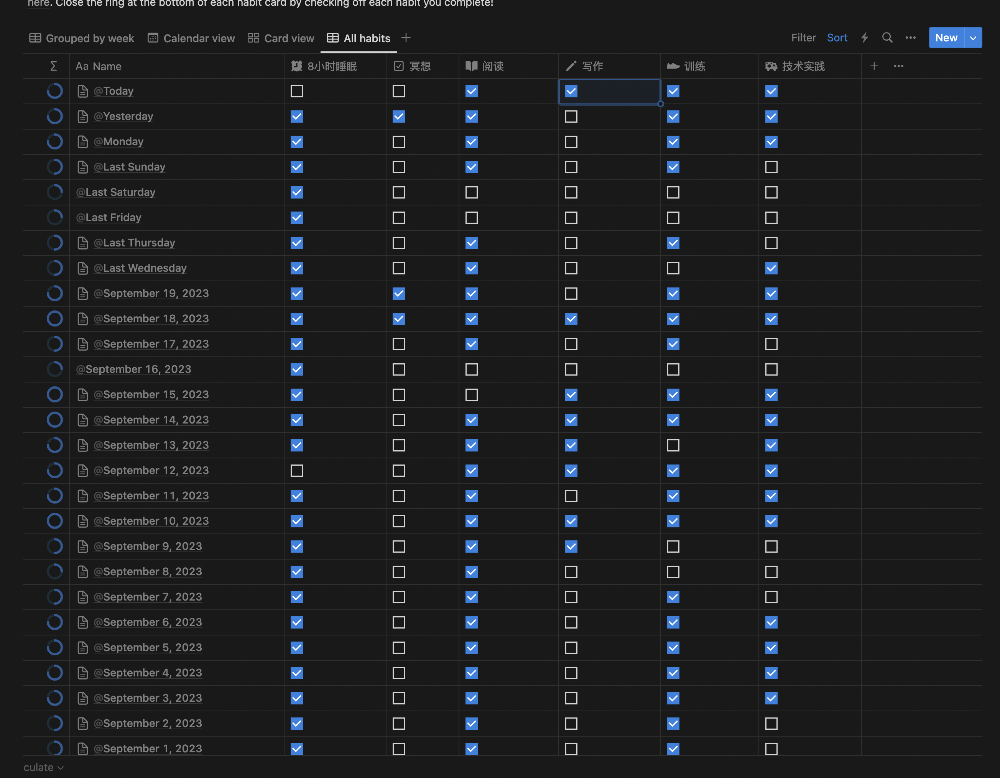

关于建立正确的工作观
周末带娃太累，空闲时间就一直刷抖音(不可取，抖音现在又被我卸载了), 看到了罗伯特清崎(富爸爸穷爸爸作者)说的一句话，深以为有所启发，记录下来:
Don’t work for money, work for assets.
有时候我们会被当前的狗屁工作所困扰，确实，很多琐碎的事情对我们的成长就是没有帮助的，这个时候就需要聪明一点，自发地去寻找能够让我们有所积累的东西。
那么哪些是所谓的assets呢？我个人的理解是包括但不限于：
- 人生观和价值观
- 清晰而稳定的目标，生活和工作的指引，这是最重要的
- 金钱
- 不用多说，物质保障
- 影响力
- 相较于金钱，是更稳定的另一种形式的财富
- 信息源
- 信息意味着机会
- 健康的身体
- 一切之源，没有好的身体，一切都只是过眼云烟
如何积累assets？
积累assets没有任何可以说道的东西，无非是你意识到这些东西，关注哪方面，刻意地分配时间和精力罢了。由于每个人对不同asset的关注不同，也就决定了他们的时间分配不同，也就会走向不同的方向。
就我自己而言，目前这个阶段，我比较看重的是人生观和价值观，信息源和健康的身体。当然了，小孩子才做选择，成年人全都要。
不过习惯和生活方式都不是一天就能改变的，时间的分配也是，慢慢来吧。
我目前的一些动作：
- 人生观和价值观
- 目前我每天会分配40分钟左右的时间用来读书，读书的范围很广，包括但不限于心理学，经济学，技术，文学等各个方面，目的是构建自己的认知体系，从而帮助自己找到人生的北极星，毕竟幸福的关键就是知道自己到底要什么，而我，现在还回答不上来。
- 信息源
- 不要吝啬自己的时间社交。和朋友们保持联系。另外，建立数量可控而稳定的高质量的信息渠道。在这个信息爆炸的网络环境下，少就是多。
- 健康的身体
- 每天会留出40分钟的时间用于运动，包括而不限于骑车通勤(来回20+km)，以及力量训练
我计划的动作：
- 写作
- 写作能够提升自己思考的质量，学习的质量，同时还能建立自己的影响力。是非常好的习惯，不过目前我还没有能稳定地每天分配时间给写作，不过最近早起的习惯渐渐地有成效了，后面还是有希望养成写作的习惯的
- 冥想
- 冥想貌似不会直接带来任何assets(如果有的话可能是专注力？)，放在计划里是为了掌握一个能够快速恢复精力和锻炼注意力的手段，这可以间接地帮助我其他方面的表现。
最后，9月快结束了，贴一张这个月的habit track吧，未来继续努力。

本博客所有文章除特别声明外，均采用 CC BY-NC-SA 4.0 许可协议。转载请注明来自 xdCao's blog！